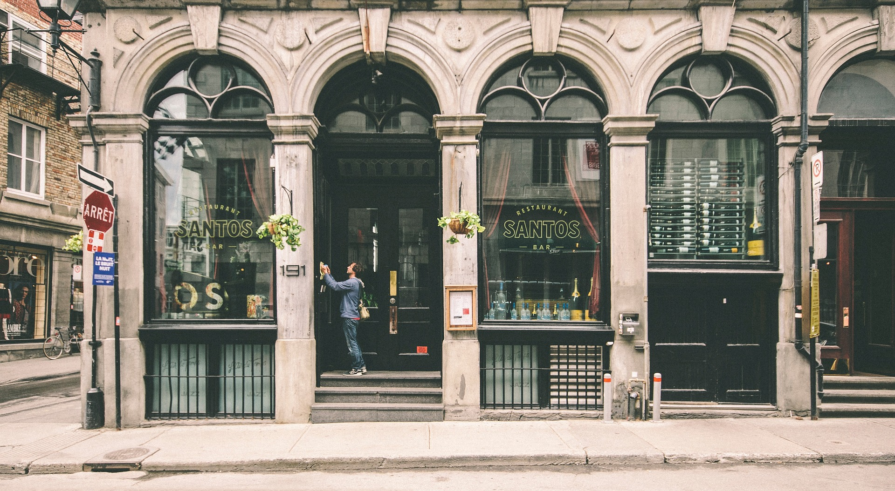

Outside Resto was established in 1955 by a immoratal, which was born on the streets of a unknown country. He developede this company all by his own, with the help of his hardwork,passion and great ethics, the company just kept on moving up to the high skies. Later in 2000 , Outside resto opened their first branch in the counrtry of Canada and then they never looked back. Right now they have over 40000 branches all over the world, making them the best franchise all over the world
